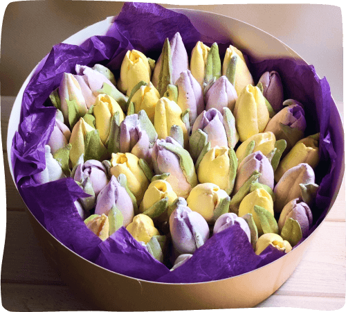
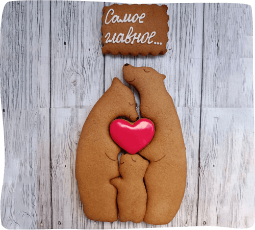
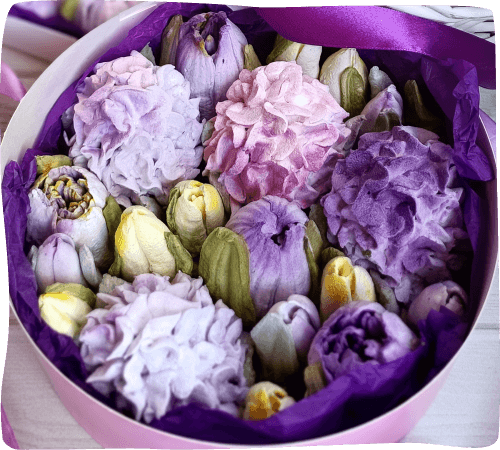
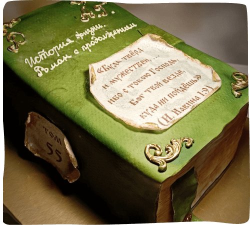
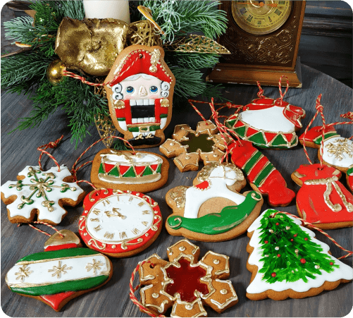
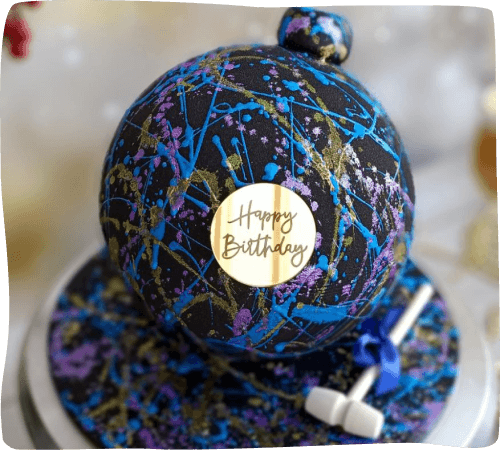
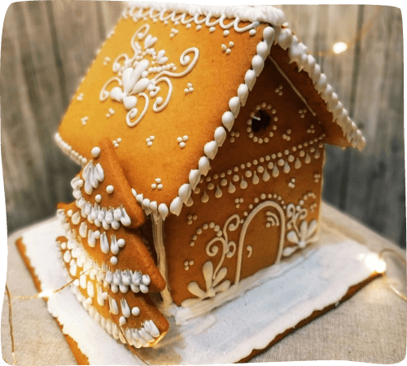
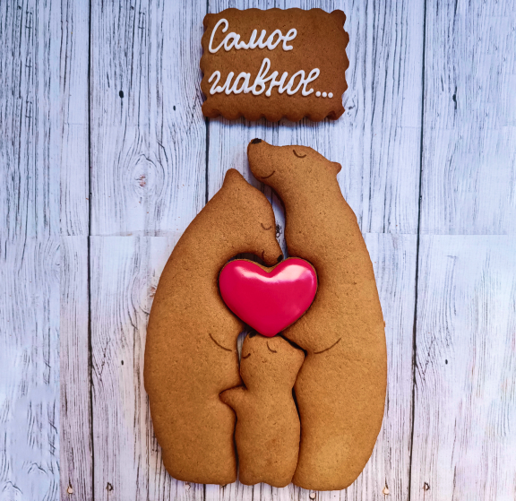
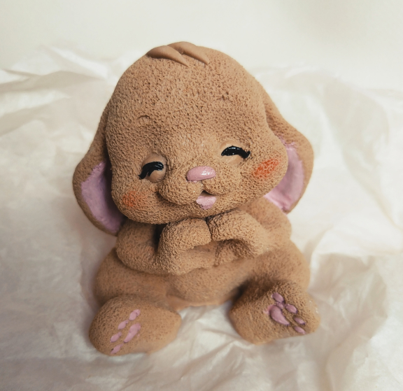

Все самое вкусное для вас
Оплата и доставка
-
ОплатаОплата любым удобным для Вас способом: наличными или СБП
-
ДоставкаСамовывоз или курьерская доставка. Бесплатно при заказе от 10000 руб.
-
КачествоТолько качественные и натуральные ингредиенты
Часто задаваемые вопросы
-
Мы специализируемся на традиционных десертах, поэтому Вам лучше обратиться к кондитеру, занимающемуся ПП-десертами.
-
Оформляйте заказ, как только определились с выбором, но не менее, чем за три дня.
-
Да, если это зефир или пряники.
-
Дело в том, что сахар выступает в роли связывающего вещества при взбивании белка. Сахарозаменители при приготовлении зефира возможны, но в своём рецепте мы используем сахар.
-
Для придания цвета некоторым изделиям мы применяем сертифицированные пищевые красители высокого качества.
-
В редких случаях при интенсивном цвете изделия такое возможно. Это нормально, так как даже натуральный краситель оставляет следы.
-
Изделия из пряничного теста и сахарной глазури довольно быстро теряют влагу при контакте с воздухом. Чтобы вернуть прянику былую мягкость, положите его в контейнер с крышкой, добавив туда кусочек яблока. Через 6-8 часов он вернёт свою первоначальную мягкость.